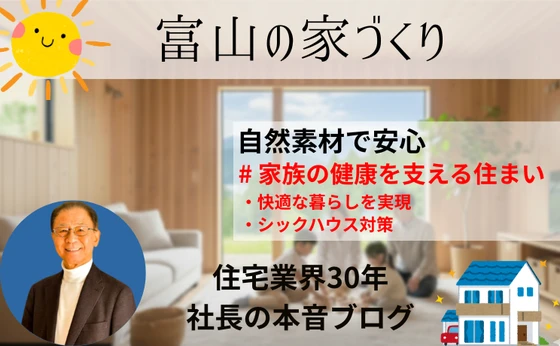
【富山・自然素材住宅】家族の健康を守る住まいづくり｜シックハウス対策＋快適な暮らしを実現
■ 健康に暮らせる家とは？ 家は「家族を守る場所」であると同時に、「健康を育む空間」でもあります。 しかし近年では、化学建材や合成塗料などが原因で、室内空気の質が低下し、シックハウス症候群やアレルギーに悩む方も増えていま
続きを読む →FUJISOU AINOS JOURNAL
家づくりのこと、暮らしのこと。
日々の想いを、お伝えします。
新しい記事から 3・40ページ

■ 健康に暮らせる家とは？ 家は「家族を守る場所」であると同時に、「健康を育む空間」でもあります。 しかし近年では、化学建材や合成塗料などが原因で、室内空気の質が低下し、シックハウス症候群やアレルギーに悩む方も増えていま
続きを読む →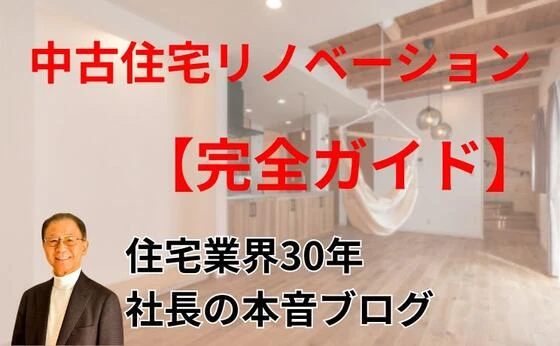
中古住宅リノベーションが今 注目される理由 近年、「 中古住宅を購入してリノベーションする 」という選択肢が急増しています。 新築価格の高騰や人気エリアでの土地不足が背景にあり、 自分らしい住まいを手頃な価格で実現できる
続きを読む →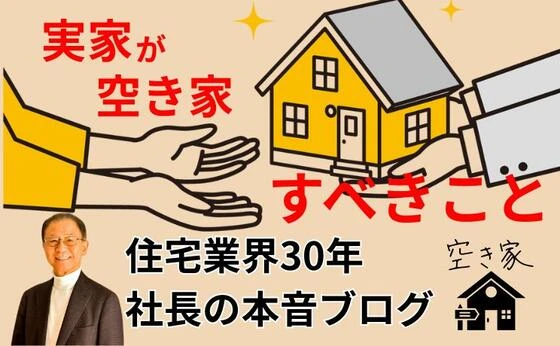
最近社会問題になっている空き家の増加 政府は所有者不明の不動産が増え、 処分ができない問題を解決するため 不動産の登記申請の義務化 が行われるようになりました。 不動産の登記申請の義務化 2024年（令和6年）4月1日か
続きを読む →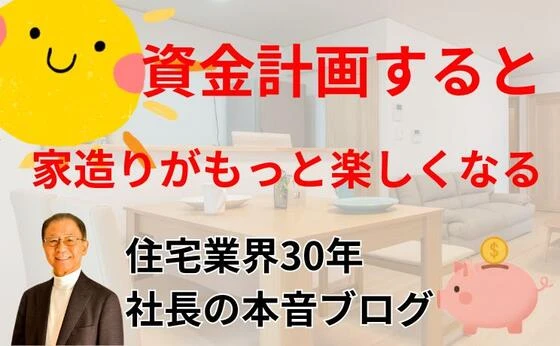
「家欲しいな」と思ったとき、まず最初に住宅サイトで 資料請求してみようという方が 沢山います。 しかし一括請求で請求すると電話、メール、読み切れない量のカタログ、 が届きビックリ、結果、何も分からず「モヤモヤ」 結局後回
続きを読む →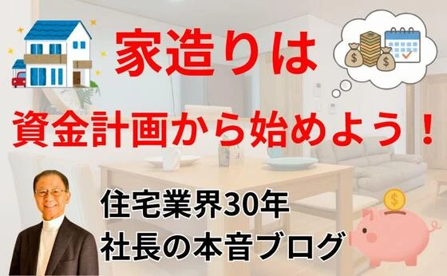
１．なぜ資金計画が一番最初なのか 家づくりというと「どんな間取りにしよう？」「外観はどうしよう？」と、 ワクワクする部分から考えがちです。 ですが、本当に一番最初に考えるべきことは「資金計画」です。 ２．家づくりで見落と
続きを読む →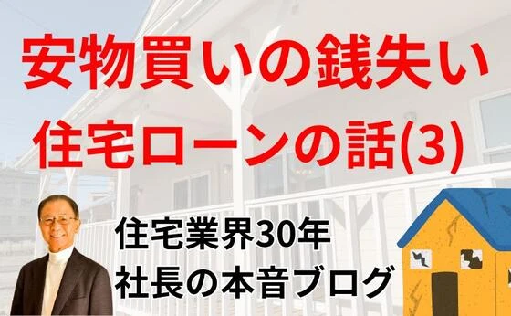
住宅ローンは誰でも簡単に組めると思ったら、大間違い 3回目の本日は先週有った事例を紹介しましょう。 ショールームへ相談に来られた方は離婚を決めた30代の女性です。 幼稚園の子供と、小学生の子供の二人 子供の通う学校区を変
続きを読む →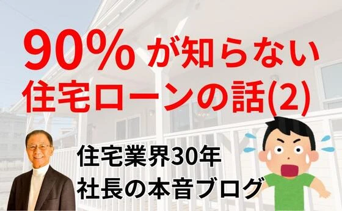
めでたく、与信力が認められローンが借りれることになったとして。 すぐ銀行に申し込みする必要はありません。 なぜか？住宅ローンは銀行によって利息が違ったり、保証料、が違ったり各行まちまちなのです。 慌てて申し込みして後から
続きを読む →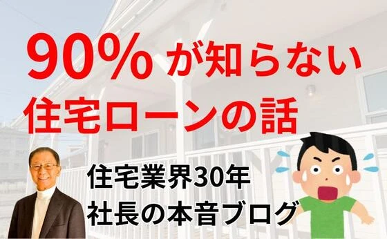
土地や家を購入する時現金で買う人はごく少数派です。 ほとんどは銀行で住宅ローンと言うものを組んで自分のものにしているのです。 しかしローンを組むと言ったら、そんなに重大なことの意識がない方が大多数なような気がします。 言
続きを読む →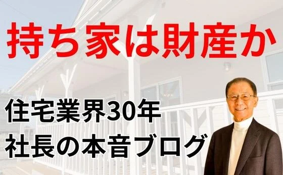
住まいを持ち家にするか賃貸で生活するかの論争は以前から それぞれにメリット、デメリットがあって結論は出ません。 そこで私の見解を述べます。 住宅の仕事しているから身びいきな話になるだろうと思われる方もいらっしゃると思いま
続きを読む →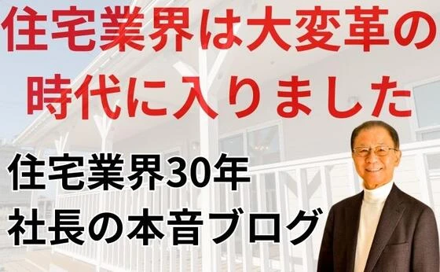
住宅業界は大変革の時代に入りました。 おそらく、土地を買って家を新築しようと思っても、一般の収入の方には 買えない時代になります。 今でも、5年前の住宅価格と比べると、概ね50%は高くなっています。 坪45万円程で売って
続きを読む →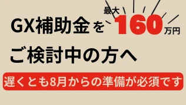
GX補助金 ―10月で予算終了！？ GX（グリーントランスフォーメーション）補助金は、省エネ住宅や再エネ設備導入に活用できる国の強力な支援制度です。 しかし2025年度は、 予算消化のペースが非常に早く 、10月ごろに上
続きを読む →4月以降の住宅価格の変化にご注意を 家づくりを考えている方にとって、タイミングはとても重要です。特にこの春、住宅価格に影響を与えるいくつかの要因があるため、検討中の方はぜひ早めのご判断をおすすめします。 最後におススメの
続きを読む →こんにちは✨ 富山県で自然素材の家づくりをしている「フジ創」です✨ 施工事例特集をしていきます✨ パート② 「家事も楽々！回遊性のある間取りのおうち」 こちらも、弊社(フジ創)が建てた施工事例です✨ 無垢のキッチンや造作
続きを読む →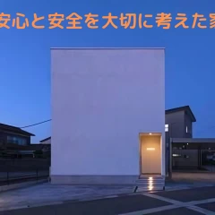
こんにちは✨ 富山県で自然素材の家づくりをしている「フジ創」です✨ 今日は、弊社の施工事例を載せていきたいと思います。 施工事例の欄にもありますが、ブログにもご紹介いたします✨ お家の題名は、、 「 安心と安全を大切に考
続きを読む →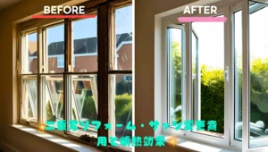
こんにちは✨ 富山県で自然素材の家づくりをしている「フジ創」です✨ 二重窓リフォーム・サッシ変更費用と断熱効果は？ 二重窓にする一番の理由は窓の結露対策です。そこに大切なのは暖気と冷気を接触させないことでした。 二重窓の
続きを読む →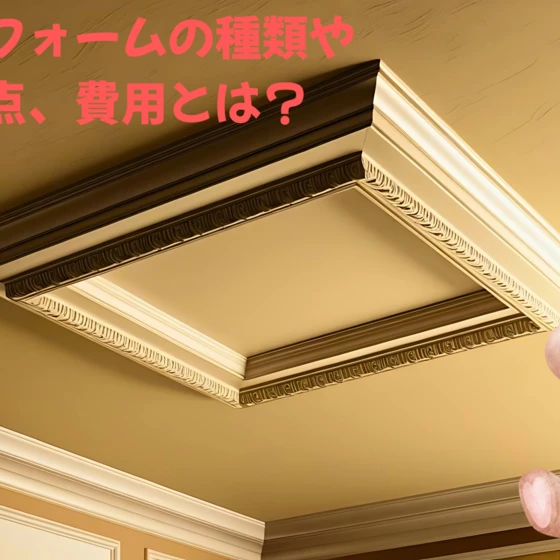
こんにちは✨ 富山県で自然素材の家づくりをしている「フジ創」です✨ 「天井リフォームの種類や注意点、費用とは？」 天井のリフォームをしたいとき、どの位の費用がかかり、どのようなことに注意したらよいのでしょうか。模様替えや
続きを読む →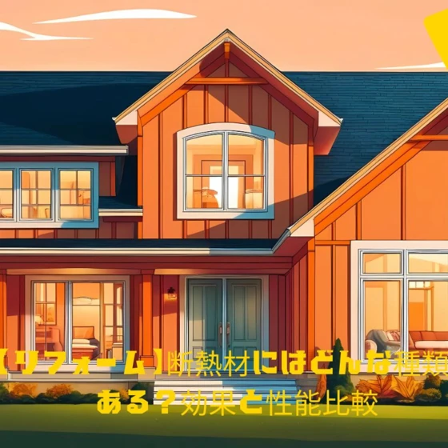
こんにちは✨ 富山県で自然素材の家づくりをしている「フジ創」です✨ 【リフォーム】断熱材にはどんな種類がある？効果と性能比較 断熱リフォームをする時には、様々な「断熱材」の中から、場所や用途、また予算に合わせた素材が選ば
続きを読む →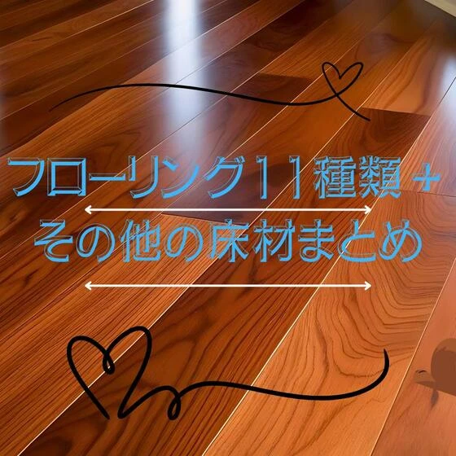
こんにちは✨ 富山県で自然素材の家づくりをしている「フジ創」です✨ フローリング11種類＋その他の床材まとめ 床材には主に以下のような種類があります。 床材 詳細 フローリング ●「無垢材」と「複合」の2タイプ ● 一般
続きを読む →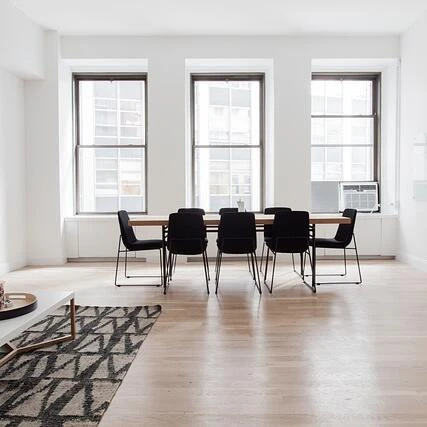
こんにちは✨ 富山県で自然素材の家づくりをしている「フジ創」です✨ 「場所別の床材はどう選ぶ？おすすめの種類や特徴」 床材は、お部屋の雰囲気を左右し、肌に触れることの多いものなので、触り心地やデザインが重要です。 床材の
続きを読む →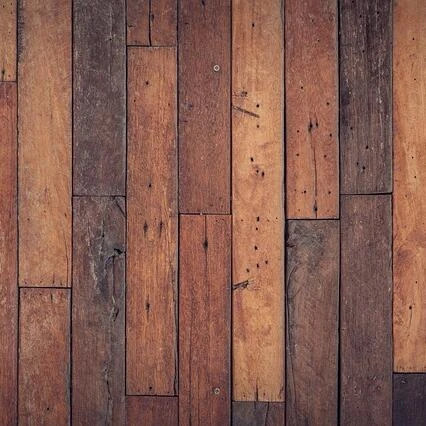
こんにちは✨ 富山県で自然素材の家づくりをしている「フジ創」です✨ 「自分でできる！フローリングを補修する方法4つ」 新築のときは、ピカピカだったフローリング。しかし、年月とともに、傷が増えていきます。 1.傷がついた場
続きを読む →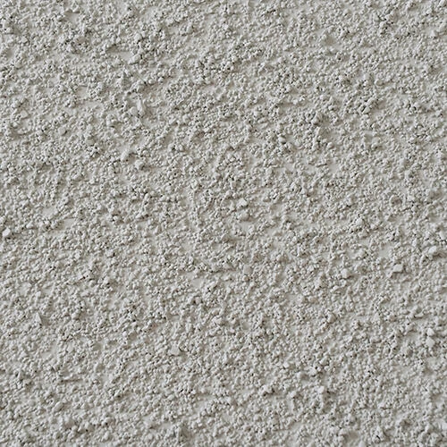
こんにちは✨ 富山県で自然素材の家づくりをしている「フジ創」です✨ 砂壁の簡単なカビ取り方法と予防策！ 砂壁にカビが生えているのを発見すると、見た目だけでなく健康面でも不安になりますよね。砂壁のカビは正しい手順で処理すれ
続きを読む →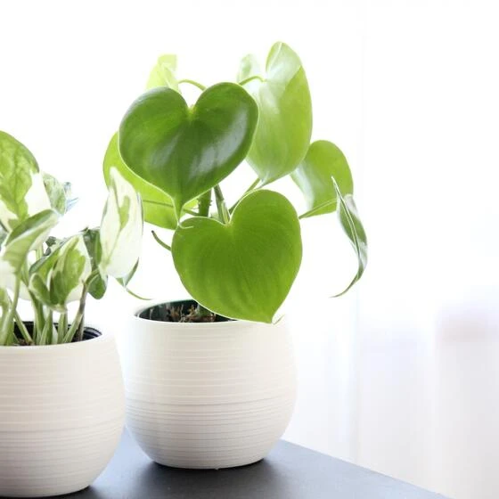
こんにちは✨ 富山県で自然素材の家づくりをしている「フジ創」です✨ 初心者でも簡単！手軽に部屋にグリーンを取り入れる方法 目に鮮やかなインテリアグリーンは、小さなものを生活に取り入れるだけでも、空間演出効果が抜群です。特
続きを読む →こんにちは✨ 富山県で自然素材の家づくりをしている「フジ創」です✨ 「免疫力アップのための食べ物」 免疫とは、ウイルスや病原菌から体を守り戦う「抵抗力」のこと。体内にウイルスや細菌、花粉などの"異物"を侵入させないように
続きを読む →こんにちは✨ 富山県で自然素材の家づくりをしている「フジ創」です✨ 庭シリーズ✨2025 「お庭でアスパラガス」 アスパラガスは種まきから収穫までに通常3年かかるので、家庭菜園で実生から育てるので大変です。 大苗を入手す
続きを読む →